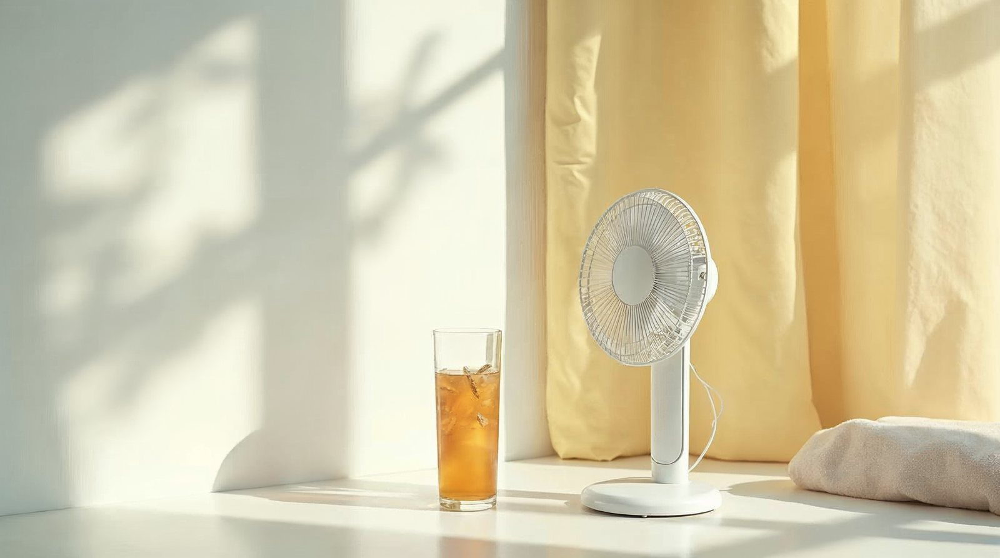
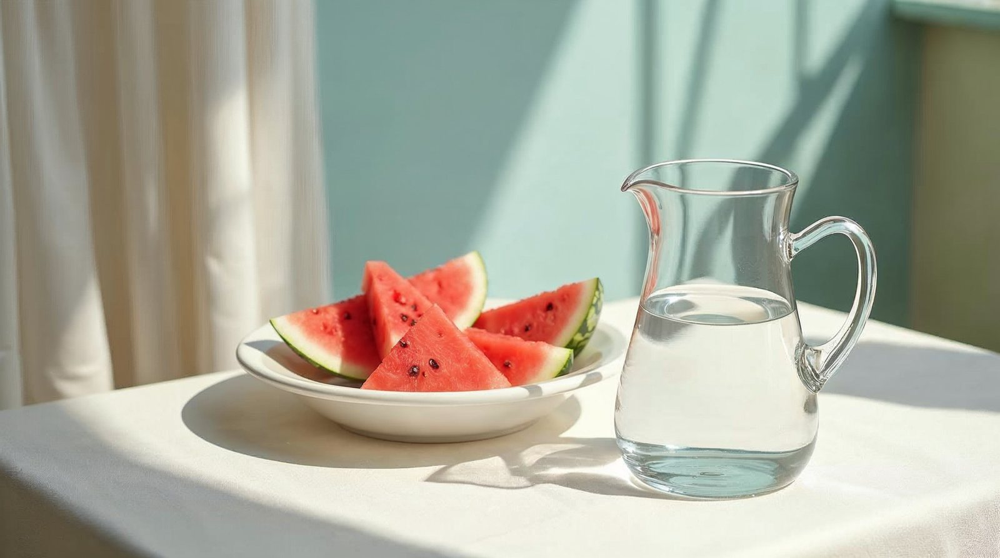
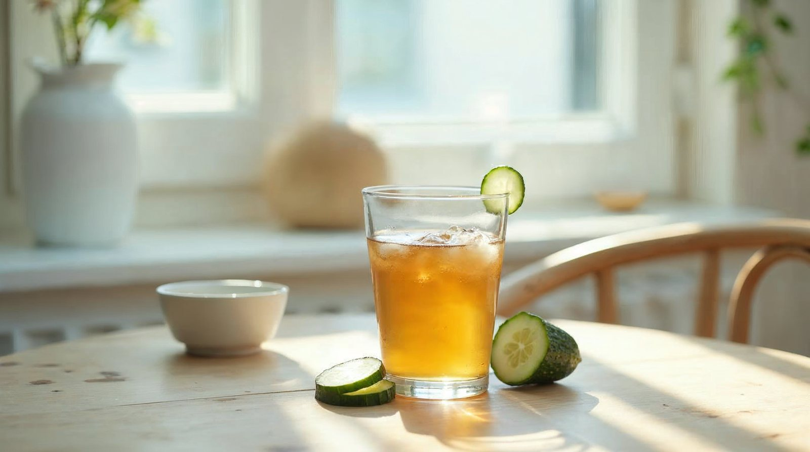
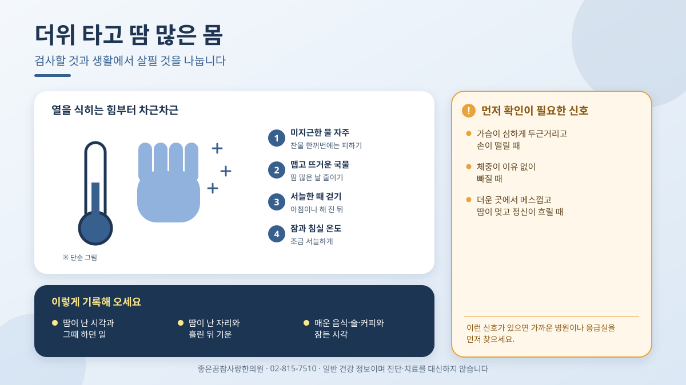

이종호 한의사 감수좋은꿈참사랑한의원 대표원장 (한의사 면허번호 19769)발행 2026-11-26 · 수정 2026-11-26
이 글의 차례
사무실 에어컨 온도를 두고 늘 혼자 다른 의견을 내는 분이 계십니다. 다들 서늘하다고 겉옷을 걸치는데 나만 부채질을 하고, 지하철 계단 몇 칸만 올라도 셔츠 등판이 축축해집니다. 진료실에 들어오시면서 "저는 원래 열이 많은 사람이라서요" 하고 먼저 손수건을 꺼내시기도 합니다.
더위를 많이 타는 것은 흔히 타고난 성격처럼 여겨집니다. 실제로 그런 몸도 있습니다. 다만 예전에는 그렇지 않았는데 요즘 들어 부쩍 더위를 못 견디게 되었다면, 혹은 땀이 나는 양이 일상을 불편하게 할 만큼 많아졌다면 한 번은 차분히 들여다볼 만합니다.
저는 이런 고민을 들으면 먼저 두 가지를 나눕니다. 하나는 몸 안의 특정한 변화 때문에 열이 많아진 경우이고, 다른 하나는 체질과 생활 리듬이 겹쳐 열을 잘 식히지 못하는 경우입니다. 앞의 것은 병원 검사로 먼저 확인하고, 뒤의 것은 한의원에서 함께 살필 수 있는 부분이 많습니다.
어느 쪽인지 알고 나면 막연한 걱정이 줄고, 생활에서 무엇부터 바꿀지도 훨씬 또렷해집니다.

더위를 많이 탄다는 것은 어떤 상태인가요
같은 온도에서도 사람마다 덥다고 느끼는 정도가 다릅니다. 근육이 많은 분, 체중이 많이 나가는 분, 평소 활동량이 많은 분은 몸에서 만들어지는 열이 많아서 더위를 더 타기 쉽습니다. 이것만으로는 걱정할 일이 아닙니다.
땀은 몸의 열을 식히는 장치입니다. 체온이 오르면 피부로 땀을 내보내고, 그 땀이 마르면서 열을 가져갑니다. 그래서 땀이 나는 것 자체는 몸이 제 일을 하고 있다는 뜻입니다. 문제는 그 양과 타이밍이 생활을 방해할 정도일 때입니다.
진료실에서 자주 듣는 표현은 이렇습니다. 밥 한 그릇 먹었을 뿐인데 이마가 젖는다, 조금만 걸어도 숨보다 땀이 먼저 찬다, 땀을 흘리고 나면 기운이 쭉 빠진다, 여름이 오는 게 두렵다. 이런 이야기 안에서 몸이 열을 다루는 방식을 짐작해 봅니다.
왜 남들보다 더위를 더 타게 될까요
더위를 유난히 타게 되는 이유는 여러 갈래입니다. 가장 먼저 확인할 것은 갑상선입니다. 갑상선 호르몬이 많아지면 몸의 대사가 빨라져서 덥고, 땀이 많아지고, 가슴이 두근거리고, 많이 먹는데도 체중이 줄 수 있습니다. 이런 변화가 함께 있다면 내과에서 먼저 검사를 받아 보세요.
혈당도 함께 봅니다. 혈당이 오르내리는 폭이 크면 식은땀처럼 땀이 나거나 몸이 화끈거릴 수 있습니다. 갱년기 무렵의 열감, 일부 약을 드신 뒤의 땀, 술을 자주 드시는 생활도 더위를 더 타게 만드는 흔한 이유입니다.
이런 확인을 마치고도 뚜렷한 이유가 나오지 않는 분이 많습니다. 한의학에서는 이런 몸을 열이 위로 잘 뜨는 체질, 혹은 기운이 약해 땀구멍을 잘 여닫지 못하는 상태로 나누어 봅니다. 앞의 경우는 얼굴이 붉고 갈증이 많으며, 뒤의 경우는 땀을 흘린 뒤 쉽게 지치고 바람을 맞으면 으슬으슬합니다.
체중이 늘면서 더위를 더 타게 된 분도 많습니다. 몸에 지방이 늘면 열이 바깥으로 빠져나가기 어려워지고, 같은 움직임에도 몸이 더 많은 일을 해야 합니다. 이때는 땀 자체보다 체중과 근육의 흐름을 함께 보는 것이 도움이 될 수 있습니다.
다한증, 갱년기 열감, 식은땀과는 어떻게 다른가요
손바닥이나 겨드랑이처럼 특정한 자리에만 땀이 많이 나고, 덥지 않아도 긴장하면 흐르는 경우는 국소 다한증에 가깝습니다. 더위를 타는 것과는 조금 다른 이야기여서 따로 살핍니다.
갱년기 열감은 가만히 있어도 얼굴과 가슴 쪽으로 화끈한 열이 몇 분 동안 확 올라왔다가 가라앉는 것이 특징입니다. 하루에도 여러 번 파도처럼 오고, 밤에 땀에 젖어 깨기도 합니다. 생리 변화와 시기가 겹치는지를 함께 여쭙습니다.
자고 일어났을 때 잠옷이 젖어 있는 밤 식은땀은 낮에 더위를 타는 것과 구분해서 봅니다. 낮에 덥고 땀이 많은 것인지, 잘 때만 땀이 나는 것인지에 따라 확인할 것이 달라지니, 오시기 전에 언제 땀이 나는지를 떠올려 보세요.
열이 많은 몸과 기운이 약한 몸, 땀은 어떻게 다를까요
같은 땀이라도 몸의 사정에 따라 모양이 다릅니다. 열이 많은 쪽은 땀이 굵고 끈적하며, 얼굴이 붉어지고 목이 자주 마릅니다. 찬물이 당기고, 변이 단단하거나 소변 색이 진한 편이며, 짜증이나 조급함이 함께 올라오는 분이 많습니다.
기운이 약한 쪽은 땀이 묽고 가늘게 배어 나오며, 조금만 움직여도 축축해집니다. 땀을 흘린 뒤 숨이 차고 늘어지며, 바람을 맞으면 금방 서늘해집니다. 감기에 잘 걸리고 목소리에 힘이 없다는 말을 듣기도 합니다.
진료실에서 이 둘을 나누어 보는 까닭은 생활에서 신경 쓸 부분이 서로 다르기 때문입니다. 열이 많은 분은 맵고 기름진 음식과 술을 줄이는 쪽이 먼저이고, 기운이 약한 분은 끼니를 거르지 않고 잠을 충분히 채우는 쪽이 먼저입니다. 같은 '땀 많은 몸'이라도 출발점이 달라집니다.

더위를 타는 분들이 자주 헷갈리는 것
첫째, 땀을 많이 흘리면 살이 빠진다는 생각입니다. 땀으로 빠지는 것은 대부분 물이어서 물을 마시면 체중도 금방 돌아옵니다. 땀을 내려고 무리하게 사우나를 오래 하거나 두꺼운 옷을 입고 운동하는 것은 오히려 몸을 지치게 할 수 있습니다.
둘째, 열이 많으니 찬 음식만 맞는다는 생각입니다. 열이 위로 뜨는 분 가운데에도 속은 차가워서 찬 것을 먹으면 배가 아프고 변이 묽어지는 분이 많습니다. 겉으로 느끼는 열과 속의 상태가 다를 수 있다는 것을 알아 두세요.
셋째, 나이가 들면 저절로 더위를 덜 탄다는 생각입니다. 연세가 드시면 더위를 느끼는 감각이 둔해져서 덥다는 느낌은 줄어도 몸은 열을 잘 식히지 못하는 경우가 있습니다. 어르신은 덥다고 느끼지 않더라도 한낮의 실내 온도와 물 드시는 양을 함께 챙겨 드리는 것이 좋습니다.
잠과 계절에 따라 달라지는 열
잠을 설친 다음 날 유난히 덥고 땀이 많았던 경험이 있으실 겁니다. 잠이 부족하면 몸이 긴장한 상태로 하루를 보내게 되고, 그만큼 열을 식히는 일이 서툴러집니다. 그래서 더위를 타는 분께는 땀만큼이나 잠을 함께 여쭙니다.
여름에는 밤에도 기온이 내려가지 않아 잠이 얕아지고, 얕은 잠이 다시 낮의 더위를 키우는 고리가 생기기 쉽습니다. 잠드는 방의 온도를 조금 낮추고, 잠들기 한두 시간 전에 미지근한 물로 씻어 몸의 열을 먼저 내려 주면 잠에 드는 길이 한결 부드러워집니다.
겨울이라고 안심할 수는 없습니다. 난방이 강한 실내와 두꺼운 옷 속에서 땀을 흘리고, 밖으로 나서는 순간 그 땀이 식으면서 감기에 걸리는 분이 많습니다. 실내에서는 겉옷을 벗어 두고, 밖에 나갈 때만 걸치는 습관이 도움이 될 수 있습니다.
먼저 이렇게 여쭙니다
처음 오시면 저는 대략 이런 순서로 여쭙니다. 정확하지 않아도 괜찮으니 떠오르는 대로 말씀해 주시면 됩니다.
- 언제부터 더위를 더 타게 되었나요? 예전과 달라진 시점이 있나요?
- 땀은 온몸에 나나요, 머리·등·손처럼 특정한 자리에 몰리나요?
- 땀을 흘린 뒤 기운이 빠지나요, 오히려 개운한가요?
- 갈증은 어떤가요? 찬물이 당기나요, 미지근한 물이 편한가요?
- 가슴 두근거림, 체중 변화, 손 떨림이 함께 있나요?
- 드시는 약이나 영양제, 술과 커피 습관은 어떤가요?
이 질문들의 대답을 맥과 혀, 손발과 배의 온도와 함께 놓고 보면 열이 많아서 땀이 나는 몸인지, 기운이 약해 땀이 새는 몸인지가 조금씩 드러납니다. 둘이 섞여 있는 분도 적지 않습니다.

일상에서 먼저 해 볼 수 있는 것
더위를 타는 몸은 생활의 작은 습관에 따라 하루가 꽤 달라집니다. 한꺼번에 바꾸기보다 하나씩 골라 보세요.
- 땀을 흘린 뒤에는 물을 조금씩 여러 번 나눠 마시기
- 맵고 뜨거운 국물, 술은 땀이 많은 날일수록 줄이기
- 몸에 붙지 않고 땀이 잘 마르는 얇은 옷을 겹쳐 입기
- 한낮보다 아침이나 해 진 뒤에 걷기
- 샤워는 너무 뜨겁지 않은 미지근한 물로 하기
- 잠드는 방은 조금 서늘하게, 이불은 얇게 겹쳐 쓰기
찬물이나 얼음을 한꺼번에 많이 드시면 그 순간은 시원하지만, 속이 차가워지면서 소화가 더뎌지는 분이 있습니다. 덥다고 찬 것만 찾기보다 미지근한 물을 자주 드시는 쪽이 오래 편한 경우가 많습니다.
움직임을 피하면 오히려 더위에 약해집니다. 몸이 땀을 내고 식히는 연습을 하지 못하기 때문입니다. 서늘한 시간대에 가볍게 걷는 것부터 시작해, 몸이 열을 다루는 힘을 조금씩 길러 보세요.
땀을 흘린 뒤 젖은 옷을 오래 입고 있으면 땀이 식으면서 몸이 차가워지고, 그 뒤에 다시 덥다가 춥다가를 반복하게 됩니다. 여벌 옷이나 작은 수건을 챙겨 다니시면 하루가 한결 편해집니다.
식사도 열과 가깝습니다. 배가 부를 만큼 한꺼번에 많이 드시면 소화하느라 몸에 열이 오르고 땀이 쏟아지기 쉽습니다. 한 끼 양을 조금 줄이고 천천히 꼭꼭 씹어 드시는 것만으로 식사 뒤 이마에 맺히는 땀이 줄었다고 말씀하시는 분이 많습니다.
커피와 에너지 음료도 한 번 살펴보세요. 카페인은 심장을 빨리 뛰게 하고 몸을 긴장시켜 땀을 늘릴 수 있습니다. 하루에 마시는 잔 수를 적어 보고, 오후 늦게 마시는 한 잔부터 줄여 보시길 권합니다.
한의원에서 함께 살필 수 있는 경우
- 검사에서 특별한 이상은 없는데 더위를 유난히 타는 경우
- 조금만 움직여도 땀이 나고 땀을 흘린 뒤 쉽게 지치는 경우
- 얼굴로 열이 오르고 갈증과 짜증이 함께 늘어난 경우
- 여름만 되면 입맛과 잠이 함께 무너지는 경우
- 체중이 늘면서 더위와 땀이 함께 많아진 경우
좋은꿈참사랑한의원에 오시면 먼저 아래 '먼저 확인이 필요한' 신호가 없는지부터 봅니다. 그다음 맥과 혀, 땀이 나는 자리와 때, 잠과 소화, 대소변을 함께 여쭙고, 열이 많은 쪽인지 기운이 약한 쪽인지를 가늠합니다.
진찰한 내용을 바탕으로 생활에서 바꿔 볼 것 하나와 함께 침이나 한약 상담 가운데 지금 상태에 맞는 것을 정합니다. 한약을 상의할 때는 드시는 약을 모두 확인하고 신중하게 정합니다. 갑상선이나 혈당 치료를 받고 계시다면 그 약은 처방한 선생님과 상의 없이 멈추지 않습니다.
임신 중이시거나 임신 가능성이 있다면 진료 전에 먼저 알려 주세요. 이 시기의 열감과 땀은 자연스러운 변화인 경우도 많아서, 산부인과 선생님과 상의하며 생활 쪽을 중심으로 살핍니다.
한의원 진료는 내과 검사를 대신하는 것이 아니라 나란히 가는 것입니다. 내과에서 갑상선과 혈당 같은 숫자를 확인하고, 한의원에서는 그 숫자로는 다 보이지 않는 열의 흐름과 기운, 잠과 소화를 함께 들여다본다고 생각해 주시면 됩니다.
이렇게 기록해 오시면 상담이 쉬워집니다
땀은 날마다 조금씩 달라서 진료실에서 한 번 보는 것만으로는 다 알기 어렵습니다. 1~2주만 간단히 적어 보세요.
- 땀이 많이 난 시각과 그때 하고 있던 일
- 땀이 난 자리(머리, 등, 겨드랑이, 손발 등)
- 땀을 흘린 뒤 기운이 어땠는지
- 그날 드신 매운 음식, 술, 커피
- 잠든 시각과 깬 시각, 밤에 덥거나 젖어서 깬 날
- 두근거림, 체중 변화처럼 함께 생긴 변화
기록을 나란히 놓으면 식사 뒤에 몰리는지, 긴장할 때 몰리는지, 잠을 설친 다음 날 심해지는지가 보이기 시작합니다. 그 흐름이 다음에 무엇을 먼저 바꿀지 정하는 실마리가 됩니다.
더위와 함께 지내는 몸을 위해
더위를 많이 타는 몸은 고쳐야 할 결함이 아니라 열을 다루는 방식이 조금 다른 몸입니다. 그 방식을 이해하면 여름이 지금보다 덜 버거워질 수 있습니다.
이번 주에는 하나만 골라 보세요. 미지근한 물을 자주 마시기, 해 진 뒤 15분 걷기, 매운 국물 한 번 줄이기. 다음에 오시면 땀 기록부터 함께 펼쳐 보겠습니다.
이런 증상은 먼저 확인이 필요합니다
- 더위와 땀이 늘면서 가슴이 심하게 두근거리고 손이 떨리며 체중이 이유 없이 빠지는 경우
- 더운 곳에서 머리가 아프고 메스꺼우며 땀이 멎고 정신이 흐려지는 경우
이런 신호가 있으면 한의원보다 가까운 병원이나 응급실을 먼저 찾으세요.
함께 읽으면 좋은 글
- 손바닥·발바닥·겨드랑이에 땀이 너무 많은 다한증은 어떻게 살피나요?
- 자고 일어나면 베개와 잠옷이 젖어 있는 밤 식은땀(도한)은 어떻게 살피나요?
- 여름에 더위를 먹은 듯 기운이 없고 어지러울 때는 무엇을 살피고 어떻게 지내나요?
- 땀이 많거나 적다고 하면 진료실에서 무엇을 묻나요?
- 오후만 되면 달아오르는 몸에 음허·허열이라는 말을 들었을 때, 어떤 뜻이고 무엇을 살피나요?

여쭙는 것
- 언제부터 더위를 더 타게 되었나요? 예전과 달라진 시점이 있나요?
- 땀은 온몸에 나나요, 머리·등·손처럼 특정한 자리에 몰리나요?
- 땀을 흘린 뒤 기운이 빠지나요, 오히려 개운한가요?
생활에서 해 볼 것
- 땀을 흘린 뒤에는 물을 조금씩 여러 번 나눠 마시기
- 맵고 뜨거운 국물, 술은 땀이 많은 날일수록 줄이기
- 몸에 붙지 않고 땀이 잘 마르는 얇은 옷을 겹쳐 입기
한의원에서 함께 살필 것
- 검사에서 특별한 이상은 없는데 더위를 유난히 타는 경우
- 조금만 움직여도 땀이 나고 땀을 흘린 뒤 쉽게 지치는 경우
- 얼굴로 열이 오르고 갈증과 짜증이 함께 늘어난 경우
먼저 확인이 필요한 신호
- 더위와 땀이 늘면서 가슴이 심하게 두근거리고 손이 떨리며 체중이 이유 없이 빠지는 경우
- 더운 곳에서 머리가 아프고 메스꺼우며 땀이 멎고 정신이 흐려지는 경우
한눈에 보는 표
| 구분 | 핵심 |
|---|---|
| 여쭙는 것 | 언제부터 더위를 더 타게 되었나요? 예전과 달라진 시점이 있나요? 땀은 온몸에 나나요, 머리·등·손처럼 특정한 자리에 몰리나요? |
| 생활에서 해 볼 것 | 땀을 흘린 뒤에는 물을 조금씩 여러 번 나눠 마시기 맵고 뜨거운 국물, 술은 땀이 많은 날일수록 줄이기 |
| 한의원에서 함께 살필 것 | 검사에서 특별한 이상은 없는데 더위를 유난히 타는 경우 조금만 움직여도 땀이 나고 땀을 흘린 뒤 쉽게 지치는 경우 |
| 먼저 확인이 필요한 신호 | 더위와 땀이 늘면서 가슴이 심하게 두근거리고 손이 떨리며 체중이 이유 없이 빠지는 경우 더운 곳에서 머리가 아프고 메스꺼우며 땀이 멎고 정신이 흐려지는 경우 |
자주 묻는 질문
원래 열이 많은 체질인데 검사를 받아 봐야 하나요?
어릴 때부터 비슷했다면 체질일 가능성이 큽니다. 다만 최근 들어 부쩍 심해졌거나 두근거림, 체중 감소가 함께 있다면 갑상선과 혈당 검사를 먼저 받아 보시길 권합니다.
땀을 많이 흘리면 기운이 빠지는 게 맞나요?
땀과 함께 물과 염분이 빠져나가서 지치는 분이 많습니다. 땀을 흘린 뒤 물을 조금씩 나눠 드시고, 땀이 유난히 많은 날은 무리한 일정을 줄여 보세요.
덥다고 찬물을 많이 마셔도 괜찮나요?
한꺼번에 차가운 것을 많이 드시면 속이 불편해지는 분이 있습니다. 미지근한 물을 자주 나눠 드시는 쪽이 대체로 편합니다.
더위를 타는 몸도 한약을 먹을 수 있나요?
진찰한 뒤 열이 많은 쪽인지 기운이 약한 쪽인지를 보고 정합니다. 드시는 약을 모두 확인한 뒤 신중하게 상의합니다.
좋은꿈참사랑한의원은 재진 때 지난번 이야기부터 이어서 여쭙니다. 진료시간과 예약은 오시는 길에서 확인하세요.
어디서 상담받을 수 있나요?
좋은꿈참사랑한의원은 서울 동작구 만양로2길 2 신성빌딩 3층·5층(서울 동작구 상도동, 7호선 상도역 3번 출구 근처)에 있습니다. 한의사 3명(이종호 대표원장, 조영기 수석진료원장, 정원영 진료원장)이 진료합니다. 진료시간은 평일 09:30~20:00(점심 13:00~14:00), 토·일·공휴일 09:30~15:00이며, 방문 전 전화로 확인을 권합니다. 예약은 네이버 예약, 카카오톡 상담, 전화 02-815-7510로 받습니다.
이 글은 일반적인 건강 정보이며 개인의 진단이나 치료를 대신하지 않습니다. 증상이 있거나 복용 중인 약이 있다면 진료를 통해 확인하세요. 치료 효과는 개인마다 다를 수 있습니다.
작성 기준: 일반적으로 알려져 있는 건강 정보를 참고해 정리했습니다(대표원장 감수). 증상 기록은 1~2주 동안 하루 1회, 비슷한 시간에 적어 오시면 지난 상태와 비교하기 쉽습니다.